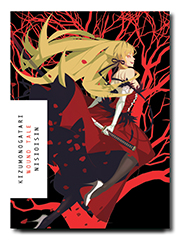

The Monogatari series revolves around Koyomi Araragi, a third-year high school student who is almost human again after briefly becoming a vampire. One day, a classmate of his, the reclusive Hitagi Senjōgahara, falls down the stairs into Koyomi's arms. He discovers that Hitagi weighs nothing, in defiance of physics. Despite being threatened by her to keep away, Koyomi offers his help and introduces her to Meme Oshino, a strange middle-aged man living in an abandoned building, who cured him of being a vampire. Once Koyomi helps solve Hitagi's problem, she decides to become his friend.
